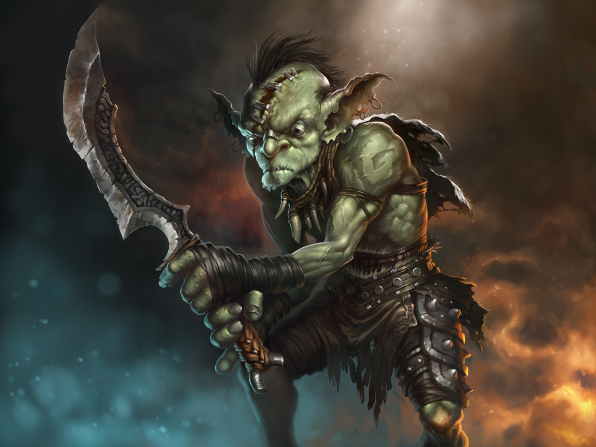
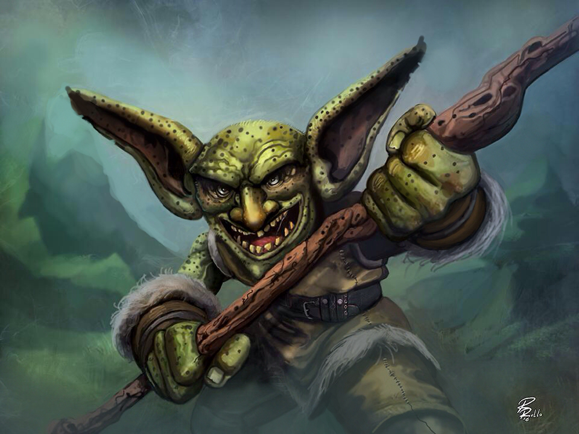

Gobliny są okrutne i złe. Nie wyrabiają pięknych przedmiotów. Na innej robocie znają się dość dobrze. Jeśli im się chce budują tunele i szyby kopalni nie gorzej niż krasnoludy. Z natury są niedbałe i brudne. mają swoich więźniów i jęców. Nie tolerują światła i powietrza. Posiadają wszelkie narzędzia tortur. Mieli króla i dużo mieczy . nienawidziły krasnalów. Gobliny żyją w stadach są ogromne, grube i szpetne
Początki istnienia goblińskiej rasy giną w mroku dziejów, ale podejrzewa się, że są ściśle związane z eksperymentami Starych Slannów. Badacze przyjmujący tę teorię są zgodni co do tego, że mniej więcej w tym samym czasie pojawiły się snotlingi i orki, natomiast hobgobliny wyewoluowały w nieznany sposób jakiś tysiąc lat później. Rzecz jasna zielonoskórzy nie wyglądali podówczas tak jak dzisiaj; przypuszczalnie skóra pierwszych goblinów miała kolor ciemnobrązowy, a zzieleniała dopiero po kilkuset latach - głównie pod wpływem słońca. Tezę tę potwierdza istnienie podziemnych goblińskich plemion, których członkowie do dziś mają skórę niemalże czarną.

Najczęściej spotykany wizerunek goblina to przebiegły, tchórzliwy sadysta, z upodobaniem dorzynający bezbronnych i torturujący jeńców, którego jedynym zajęciem są walka i podłe knowania. Takie traktowanie tej rasy wzbudza mą niechęć. Dlatego też gobliny są w moich oczach nieco inne.
Niewątpliwie wiele goblinów zachowuje się w opisany powyżej sposób. Winna takiemu stanowi rzeczy jest między innymi twarda szkoła życia, ucząca młodych zielonoskórych, że jedynym sposobem na poradzenie sobie w Starym Świecie jest chytrość i okrucieństwo. Od najmłodszych lat gobliny słyszą nie o honorze czy etyce, ale o zemście i zdradzie. Ich nauczyciele mają wszak swoje racje - niemal każdy napotkany człowiek, elf czy krasnolud na widok goblina wyciąga broń, zdecydowany na prucie flaków. To powoduje, że zielonoskórzy reagują podobnie. Pogłębia się niechęć, zwiększa liczba bezsensownie zabitych po obu stronach... Błędne koło trwa.
A przecież tak być nie powinno. Gobliny to jedna z niewielu inteligentnych ras tak mocno związanych z naturą. Ich kontakty ze zwierzętami są nierzadko bardzo głębokie, i mam tu na myśli wyłącznie przyjaźń. Dlatego tak często spotyka się wśród goblinów wilki, dziki i inne niedające się ludziom oswoić zwierzęta. Inna rzecz, że zielonoskórzy często wykorzystują swoich zwierzęcych przyjaciół do walki, co nie przysparza im nic dobrego.
W ciekawy sposób zielonoskórzy traktują też magię. Nie jako sztukę tajemną, wymagającą długotrwałych studiów i dożywotniej samotności, ale jako przejaw mocy natury, kwintesencję sił nią rządzących, dającą się okiełznać tylko nielicznym wybrańcom, ale będącą ich przyjacielem, nie wrogiem. To dosyć dobrze odzwierciedla ich stosunek do przyrody i otaczającego ich świata, a zarazem wyjaśnia, dlaczego gobliny nie parają się zasadniczo demonologią i nekromancją, najciemniejszymi dziedzinami magii.

Gobliny są niskimi (przeciętnie 1,2 metra wzrostu) humanoidami. Ich szkielet jest zbliżony do ludzkiego, aczkolwiek kości goblinów są znacznie mniejsze i lżejsze. Kolor skóry obejmuje wszelkie odcienie zieleni i brązu. Oczy i włosy są zwykle czarne lub ciemnobrązowe, a krew czarnozielona. Wygląd poszczególnych goblinów może diametralnie się różnić, co jest spowodowane mieszaniem się ras i szczepów.
Gobliny widzą w ciemności na odległość 10 metrów. Ponadto dobrze się rozumieją z dzikimi zwierzętami (wilki, dziki), dzięki czemu ich oswajanie przychodzi goblinom stosunkowo szybko i łatwo. Dla potrzeb gry można przyjąć, że większość goblinów dysponuje wrodzoną umiejętnością Opieka nad zwierzętami.